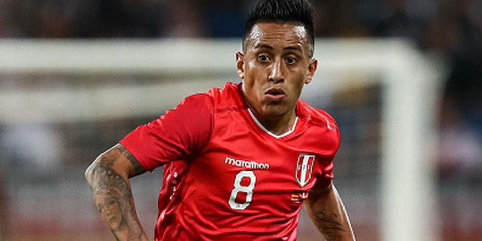
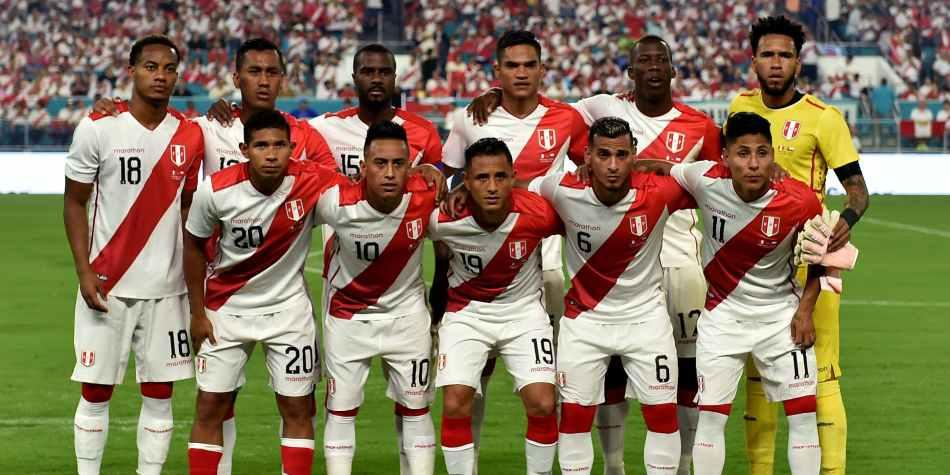
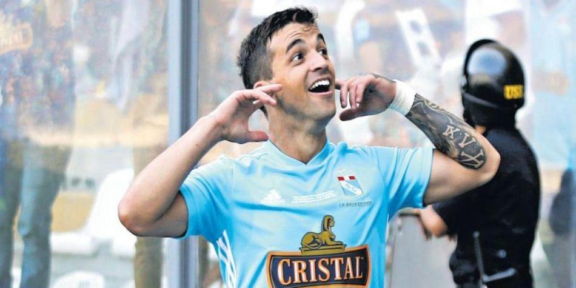

Fichas Técnicas
Nombre: José Paolo Guerrero Gonzales
Nombre: Jefferson Agustín Farfán Guadalupe
Fecha de nacimiento: 26/10/1984
Edad: 34 años
Altura: 1,78 m
Posición: Delantero
Club Actual: Lokomotiv Moskva
Nombre: Christian Alberto Cueva Bravo
Fecha de nacimiento: 23/11/1991
Edad: 27 años
Altura: 1,69 m
Posición: Medio centro ofensivo
Club Actual: Santos FC
Nombre: André Martín Carrillo Díaz
Fecha de nacimiento: 14/06/1991
Edad: 27 años
Altura: 1,81 m
Posición: Extremo Derecho
Club Actual: Al-Hilal Riyadhs
Nombre: Víctor Yoshimar Yotún Flores
Fecha de nacimiento: 23/11/1991
Edad: 28 años
Altura: 1,71 m
Posición: Medio centro
Club Actual: CD Cruz Azul
Noticias
El mensaje de la Selección Peruana a Christian Cueva tras ser oficializado como nuevo jugador de Santos

La Selección Peruana utilizó su cuenta oficial de Twitter para felicitar a Christian Cueva tras convertirse oficialmente en el nuevo fichaje de Santos. “Le deseamos todos los éxitos a Christian Cueva , volante de nuestra @SeleccionPeru , en el nuevo reto que emprenderá en @SantosFC”, expresó la 'bicolor'.
La Selección Peruana utilizó su cuenta oficial de Twitter para felicitar a Christian Cueva tras convertirse oficialmente en el nuevo fichaje de Santos. “Le deseamos todos los éxitos a Christian Cueva , volante de nuestra @SeleccionPeru , en el nuevo reto que emprenderá en @SantosFC”, expresó la 'bicolor'.
Fuente: Depor.com
Selección Peruana: la posición de la 'bicolor' en el nuevo ranking FIFA

La reciente publicación del ranking FIFA deja a la Selección Peruana entre los 20 mejores equipos nacionales. El cuadro dirigido por Ricardo Gareca no ha cambiado de puesto, respecto de la pasada clasificación (difundida el 7 de enero).
La reciente publicación del ranking FIFA deja a la Selección Peruana entre los 20 mejores equipos nacionales. El cuadro dirigido por Ricardo Gareca no ha cambiado de puesto, respecto de la pasada clasificación (difundida el 7 de enero).
Fuente: Depor.com
Gabriel Costa se pronunció sobre su posible convocatoria a la Selección Peruana

Gabriel Costa , quien abandonó Sporting Cristal para pasar al equipo chileno Colo-Colo, aseguró que mantiene la ilusión de ser convocado por Ricardo Gareca y pertenecer a la Selección Peruana. “Me ilusiona, sí, porque obviamente a uno le gustaría estar ahí”, declaró el uruguayo.